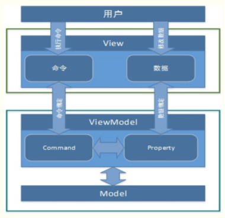
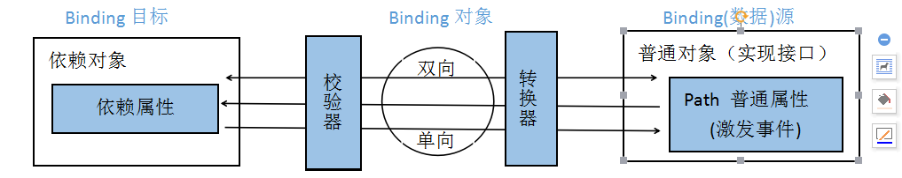
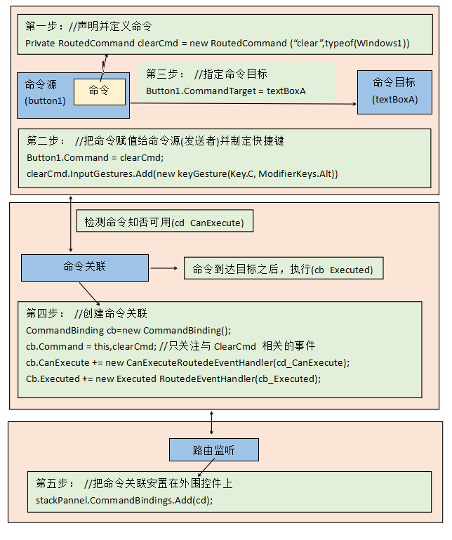

之前一直开发Winfrom程序，由于近一段时间转开发Wpf程序，刚好拜读刘铁锰《深入浅出WPF》对此有一些理解，如有误导指出，还望斧正！！！
说道WPF数据驱动的编程思想，MVVM，是为WPF量身定做的模式，该模式充分利用了WPF的数据绑定机制，最大限度地降低了Xmal文件和CS文件的耦合度，也就是UI显示和逻辑代码的耦合度，如需要更换界面时，逻辑代码修改很少，甚至不用修改。与WinForm开发相比，我们一般在后置代码中会使用控件的名字来操作控件的属性来更新UI，而在WPF中通常是通过数据绑定来更新UI；在响应用户操作上，WinForm是通过控件的事件来处理，而WPF可以使用命令绑定的方式来处理，耦合度将降低。
1 MVVM : model--view--viewmodel，在view层不直接引用model，而是通过viewmodel将view与model关联，降低了view和model的耦合。如下图所示：

2 View与Viewmodel数据绑定
View中的显示数据绑定viewmodel的属性（因此viewmodel需要继承INotifyPropertyChanged通知接口），其思想是数据驱动，而非事件驱动。

3 Binding 对数据的转换与校验
Bindind的作用就是架在Source与Target之间的桥梁，数据可以在这座桥梁的帮助下来流通。但是现实世界有安检关本来校验数据的有效性，当然在设计思路上Binding用于有效性校验关卡是validationRules属性，数据类型转换的关卡是Converter属性。
4 命令
